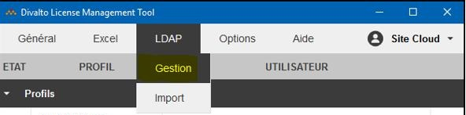
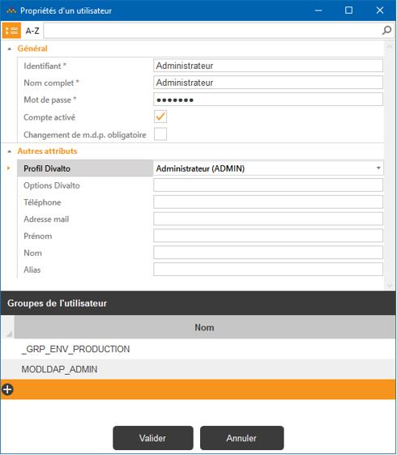
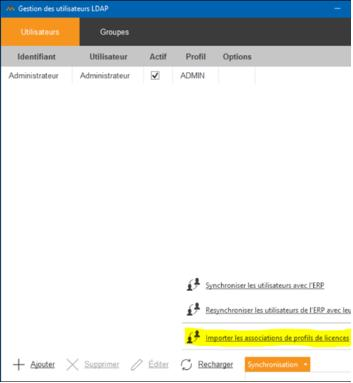
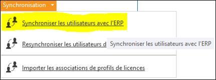

Accueil | Divalto SAAS | Gestion des utilisateurs
Gestion des utilisateurs
Nous sommes ici confrontés à la problématique de la poule et de l’œuf
: Le paramétrage des utilisateurs de l’ERP nécessite leur création dans
l’ERP mais pour que les utilisateurs puissent se connecter, il faut les
créer dans l’annuaire LDAP du Cloud. Cette opération doit donc s’effectuer
en plusieurs étapes, à exécuter
impérativement dans l’ordre suivant :
- Création d’un utilisateur d’administration de l’ERP dans l’annuaire LDAP.
Cet utilisateur devra être membre du groupe MODLDAP_admin du site dans
le cloud.
Le groupe MODLDAP_admin existe dans l’annuaire, ainsi que le modèle
correspondant dans l’ERP.

Dans la gestion des utilisateurs de l’annuaire LDAP, ajoutez
un nouvel utilisateur et associez-le
au groupe MODLDAP_admin, ainsi qu’au groupe correspondant
à l’environnement.
- Association de cet utilisateur à un profil
de licences ADMINISTRATEUR afin qu’il puisse exécuter toutes
les fonctionnalités de l’ERP.

- Importation des associations de
profil de licences et validation de cette association.
Ceci a pour effet de créer un fichier de licences valide pour le site
concerné. Cette opération doit être antérieure à la synchronisation
des utilisateurs avec l’ERP (qui nécessite des licences).

Il faut valider le message d’avertissement signalant que les
associations existantes vont être effacées, puis valider la fenêtre
d’association des profils de licences.
Le message « Les licences ont été installées avec succès »
doit ensuite apparaître.
- Synchronisation de cet utilisateur
avec l’ERP, afin de pouvoir exécuter l’ERP Divalto.

- Exécution de l’ERP avec cet utilisateur afin de créer
les modèles des autres utilisateurs de l’ERP.
- Création des groupes d’utilisateurs
dans l’annuaire LDAP par DLMT correspondant aux modèles de
l’ERP (le nom du modèle correspond au nom du groupe dans l’annuaire
LDAP).
- Création de tous les autres utilisateurs
par DLMT dans l’annuaire LDAP du site et association de ces
utilisateurs aux groupes correspondants.
- Association des utilisateurs aux
profils de licences.
- Synchronisation des utilisateurs
de l’annuaire LDAP avec l’ERP.
Tous les utilisateurs pourront alors se
connecter à l’ERP par un client léger Wpf ou Html5.